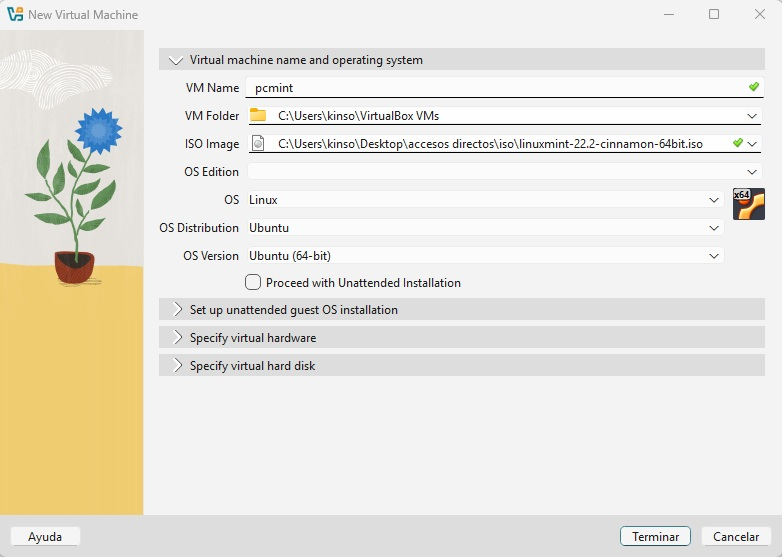

Windows 7
Instalacion
Procedemos a realizar la instalación de Windows 7 (en este caso he elegido esta version por que es mucho más ligera y me trae muy buenos recuerdos). Lo primero es bajarnos el archivo .iso a ser posible y recomendado de la página oficial de Microsoft, pero al ser un SO tan antiguo no lo he logrado conseguir facil de la página oficial de hecho ya no se ni siquiera si lo hay ( no tiene ni soporte asi que encontré el siguiente enlace en youtube) (enlace) desde donde nos podremos descargar la iso. Yo me he bajado la versión windows 7 de 64. Como ya tengo la carpeta de isos creada una vez haya descargado, inserto dentro de dicha carpeta el archivo que me acabo de descargar. El siguiente paso sería crear la máquina virtual (SO). Va a ser muy parecido a la instalación del servidor, abrimos la máquina virtual presionamos en nueva. Y seguimos con los siguientes pasos:
- En VM Name le ponemos el nombre al sistema operativo por ejemplo win7
- En la parte de ISO Image abrimos el desplegable y buscamos la localización del archivo .iso que guardamos en la carpeta dedicada y seleccionamos el archivo correspondiente
- Y por último desmarcamos la opción de Proceed wiht Enattended Installation ( si no desmarcamos este botón hay que configurar ciertas cosas que me daban problemas a la hora de instalar la máquina)
- Botón terminar.

Aplicamos la misma configuración de red que en el caso del server22 y le damos al botón de iniciar
La instalación es muuy parecida a la del server 22, es muy intuitiva y más rápida.